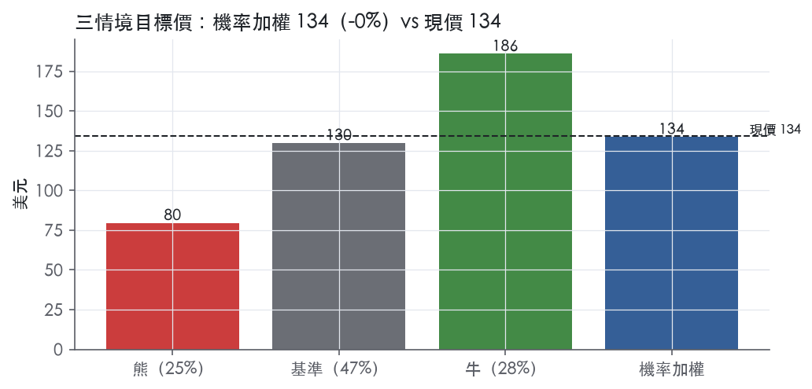
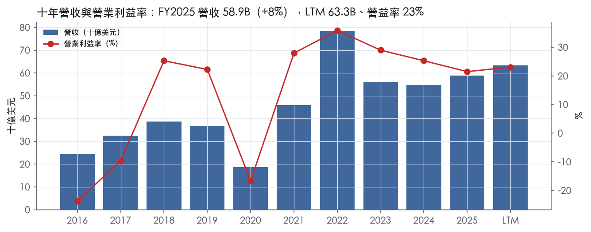
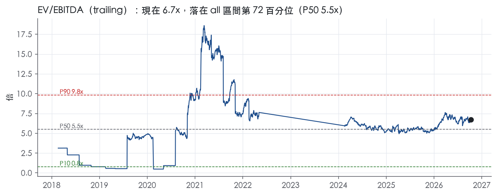
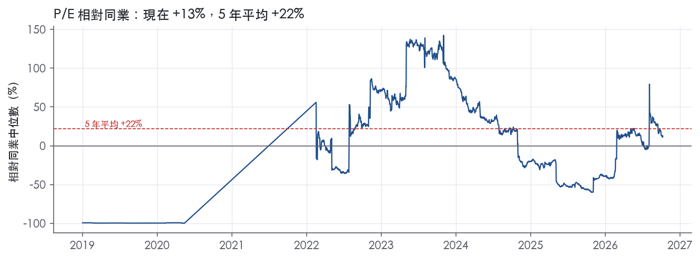
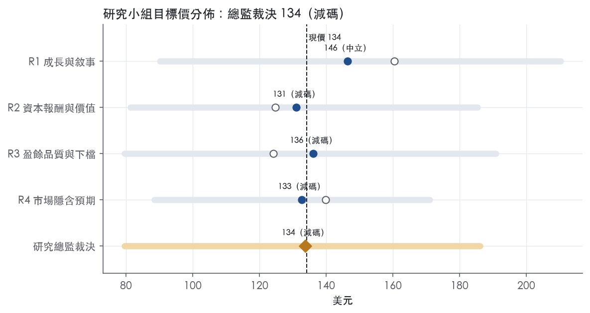
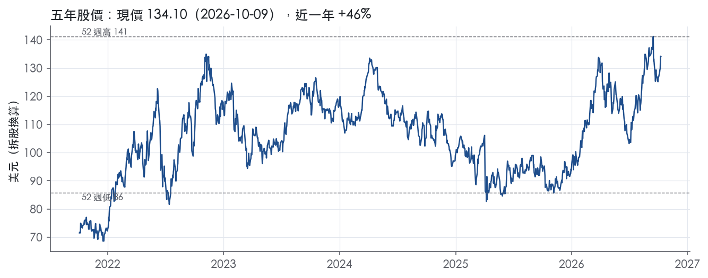

評等總表 › 能源 › COP
油價溢價入價，均值回歸不過門檻，減碼｜評等 減碼｜目標價 134
| 報告日 | 評等 | 目標價 | 當時股價 | 超額報酬 |
|---|---|---|---|---|
| 2026-10-09 | 減碼 | 134 | 134 | -8.0% |
| 評等 | 減碼 |
| 12 個月目標價 | 134 美元 |
| 現價 | 134.10 美元（2026-10-09） |
| 預期報酬 | 股價 -0.3%＋股息 2.5%＝總報酬 +2.2%；同業籃門檻 10.2%，超額 -8.0% |
| 估值方法 | EV/EBITDA 5.8x，套在三年平均的EBITDA |
| 三情境 | 熊 80／基準 130／牛 186 |
| 研究流程 | 四位研究員兩輪辯論＋研究總監裁決 |
| 資料來源 | SEC EDGAR XBRL、Tiingo、FRED（全免費） |
油價溢價入價，均值回歸不過門檻，減碼（研究總監裁決，四位研究員兩輪辯論後）
評等 減碼｜12 個月目標價 134 美元（總監三情境機率加權 133 與研究員中位數 134 各半）｜現價 134.10（2026-10-09）
預期報酬：股價 -0.3%＋股息 2.5%＝總報酬 +2.2%。同業籃門檻 10.2%，超額 -8.0%。
估值方法：EV/EBITDA 5.8x，套在三年平均的EBITDA。三情境：熊 80（25%）／基準 130（47%）／牛 186（28%）。
什麼會讓研究總監改變看法：FY2026Q3、Q4 實現價都守在 60 美元/BOE 以上且 2027 年產量指引顯示中個位數有機量增，y2 轉正、倍數移向 1y P50 6.5x；Q4 實現價跌破 50 且 2027 資本支出指引仍 ≥12B，熊機率上調、基準倍數改錨 3y P10。
| 過去四季（實際，FY2026Q2） | 未來四季 | 第 5–8 季 | 第 9–12 季 | |
|---|---|---|---|---|
| 營收（B） | 63.3B | 66.5B | 63.9B | 67.0B |
| 營收成長 | 9.6% | 5.0% | -4.0% | 5.0% |
| 營業利益率 | 23.1% | 24.0% | 22.0% | 23.0% |
| EPS（美元） | 7.54 | 8.97 | 8.10 | 9.29 |
| EPS 成長 | 0.5% | 18.9% | -9.7% | 14.7% |
| 每股股息（美元） | 3.30 | 3.30 | 3.30 | 3.30 |
| P/E（現價） | 17.8x | 15.0x | 16.6x | 14.4x |
| 股息殖利率（現價） | 2.5% | 2.5% | 2.5% | 2.5% |
過去四季為申報數字；預測為研究總監的假設、程式計算。倍數與殖利率都用現價計算，用來看現價對應各期獲利的高低。
| 情境 | 機率（歷史） | 故事 | 未來四季營收成長 | 第 5–8 季營益率 | 倍數 | 目標價 | 股價漲跌 |
|---|---|---|---|---|---|---|---|
| 熊 | 25%（22%） | 風險表第 1 條（停火＋OPEC+ 增產，實現價跌破 FY2025Q2 的 45.77 美元/BOE）與第 3 條（回購縮減），倍數落 3y P10 | -10.0% | 16.0% | 5.3x | 80 | -40.7% |
| 基準 | 47%（49%） | 價格向 FY2025 靠、量依指引回升，2029 年 FCF 躍升不在一年內兌現，倍數回 3y 中位 | 5.0% | 22.0% | 5.8x | 130 | -3.1% |
| 牛 | 28%（29%） | 衝突溢價延續、卡達復產、Kirkuk 交割、LNG 承購 12 MTPA 同時兌現，市場續付 1y P50 | 12.0% | 26.0% | 6.5x | 186 | 38.8% |
目標價由程式依研究總監的驅動與倍數計算；機率由研究總監給定。括號內是歷史頻率：把這檔股票過去十年 12 個月報酬的波動形狀，置中在基準情境，結果落在各情境附近的比例。

四位研究員用不同方法各自估值，回應研究總監的質疑後交出第二輪，最後由總監逐點裁決。各研究員的主張見第七章，裁決理由見第八章，完整論證見《研究底稿》。
| 立場（一輪→二輪） | 加權目標價（一輪→二輪） | 評等（一輪→二輪） | 第二輪倍數 | 熊～牛目標價 | |
|---|---|---|---|---|---|
| R1 成長與敘事 | 中性→中性 | 160→146 | 加碼→中立 | 6.5x | 90～210 |
| R2 資本報酬與價值 | 看空→看空 | 125→131 | 減碼→減碼 | 5.8x | 81～185 |
| R3 盈餘品質與下檔 | 看空→看空 | 124→136 | 賣出→減碼 | 5.8x | 80～191 |
| R4 市場隱含預期 | 中性→看空 | 140→133 | 中立→減碼 | 5.8x | 89～171 |
| 研究總監裁決 | 看空 | 134 | 減碼 | 5.8x | 80～186 |
目標價由程式依各自的驅動與倍數計算；評等＝機率加權總報酬 − 同業籃門檻。
ConocoPhillips 是一家總部位於休士頓的獨立 E&P（探勘與生產）公司，在全球 14 個國家從事原油、瀝青、天然氣、NGL 與 LNG 的探勘、生產、運輸與行銷¹。公司不做下游煉油與零售（2012 年已分拆出 Phillips 66），商業模式是把地底資源變成可銷售的大宗商品，直接賣給市場，不賺品牌或終端消費者的錢。2025 年底總資產約 122B 美元，員工約 9,900 人，全年總產量 2,375 MBOED¹。客戶端沒有單一下游品牌暴露，營收完全隨油氣價格波動，這也是為什麼公司近四季 EPS 從 1.15 到 3.23 美元劇烈擺動（is 系列已在下節列出）。
公司依地理區劃分五個營運分部：Alaska、Lower 48、Canada、Europe/Middle East/North Africa（EMENA）、Asia Pacific¹。Lower 48 是最大分部，2025 年貢獻公司合併液體產量的 67%、天然氣產量的 74%，主力在 Delaware、Eagle Ford、Bakken、Midland 四大非傳統盆地，合計日產 1,484 MBOED¹。Alaska 貢獻液體產量 12%、天然氣 1%，核心資產是 Prudhoe Bay、Kuparuk、Western North Slope，公司是阿拉斯加最大原油生產者，正在推進 2029 年初產油的 Willow 專案¹。Canada 分部（Surmont 油砂＋Montney）貢獻液體產量 9%、天然氣 5%¹。EMENA（挪威、卡達、利比亞、赤道幾內亞）貢獻液體產量 8%、天然氣 18%——天然氣占比明顯偏高，反映該區以卡達 LNG 合資（N3，持股 30%）與挪威氣田為主¹。Asia Pacific（澳洲 APLNG、中國蓬萊、馬來西亞）貢獻液體產量 4%、天然氣 2%，屬邊際貢獻分部¹。各分部對集團營收的美元貢獻比重，10-K 未揭露，只揭露產量佔比。LNG 是公司刻意擴大的第二成長軸：目前北美 LNG 外銷合約總量已擴大到 12 MTPA（原為 10.2 MTPA）²，公司並自稱是全球第二大 LNG 液化技術提供商，Optimized Cascade® 技術已授權用於全球 28 條 LNG 生產線¹。
商品銷售主要透過市場指數定價的合約進行，原油、瀝青、NGL 來自美國、加拿大、亞洲、非洲與歐洲的產出；天然氣客戶群涵蓋地方配氣公司、天然氣與電力公用事業、大型工業用戶、各國油氣公司及行銷公司¹。公司全球承諾未來交付約 9 MTPA LNG、820 billion cubic feet 天然氣，以及 175 million barrels 原油，合約到期日最晚到 2042 年¹。地理上，84% 已探明儲量位於 OECD 國家，反映公司資產組合相對集中在政治風險較低的區域¹，但中東（卡達）、北非（利比亞）仍有實質曝險——2026 年中東衝突已實際拖累卡達產量並衝擊第二季財報²。員工地理分布上，美國占 62%，挪威 16%，加拿大 8%，赤道幾內亞 4%，馬來西亞 3%¹，與分部產量結構大致對應。
FY2025Q3 營收 15.03B 美元，年增 15.3%，EBITDA 5.84B 美元，EPS 1.38（is 系列，依資料包）。FY2025Q4 營收 13.39B 美元，年減 5.9%，EBITDA 5.26B 美元，EPS 1.15，營益率降至 16.9%，季度利潤率明顯走弱（依資料包）。FY2026Q1 公司報告每股盈餘 1.78 美元、調整後每股盈餘 1.89 美元，營運現金流 4.3B 美元、CFO（排除營運資金變動）5.4B 美元³；當季總平均實現價格 50.36 美元/BOE，較去年同期 53.34 美元/BOE 低 6%，公司將第二季產量指引（排除卡達）下修至 2.185–2.215 MMBOED，並把全年資本支出指引上修至 12–12.5B 美元³。FY2026Q2 公司報告每股盈餘 3.23 美元、調整後每股盈餘 3.24 美元，營運現金流 7.4B 美元、CFO 7.2B 美元，總股東回饋達 3.0B 美元（含 2.0B 股票回購與 1.0B 股息），全年現金回饋 CFO 比例力爭達 45%²；當季總平均實現價格 62.33 美元/BOE，較去年同期 45.77 美元/BOE 高 36%²。公司重申全年指引不變，並將第三季產量指引設為 2.29–2.32 MMBOED²。
CEO Ryan Lance 表示，公司「正良好執行、落實策略，並有望在 2029 年前達成 70 億美元自由現金流躍升」的目標²。公司強調已提前達成 50 億美元資產處置目標，並把處置所得與現金流用於提高股東回饋，第二季已把股票回購規模翻倍²。成長引擎方面，公司明確提到三條線：（1）併購擴張低成本供應資產，例如簽約取得伊拉克 Kirkuk 地區合資 42% 權益，以及重返敘利亞恢復既有基礎設施產能²；（2）LNG 版圖擴張，北美外銷合約已增至 12 MTPA，並持續在所有主要 LNG 生產與消費地區洽談新頭寸¹、²；（3）Lower 48 資本效率提升，例如三英里以上長水平井佔比較去年同期翻倍以上³。公司在 Willow（阿拉斯加，2029 年初首油）與 Permian 多個盆地的鑽井計畫，構成未來數年產量成長的主要有機來源¹。整體看，ConocoPhillips 的敘事是「低成本供應組合＋高股東回饋」雙軌：資產賣得掉的賣、現金流回饋股東的比例鎖在 45%，而中東地緣政治風險（卡達停產、伊拉克新進場）是近四季波動的主要外部變數。公司將 2029 年自由現金流躍升目標當作主要敘事錨點，但這高度依賴油價與地緣政治穩定，執行風險不低。

ConocoPhillips 沒有經濟護城河：我們沒有把握它未來 5 年以上的 ROIC 能持續高於資本成本。 公司是大宗商品的價格接受者，10-K 寫明商品一般以銷售當時的市場價格出售¹。 公司也寫明每個分部都高度競爭，沒有單一或少數競爭者能主導¹。 它有成本面的相對優勢，但這種優勢只決定它在油價低谷時虧得比同業少，不足以讓報酬穿越整個週期。 趨勢評為穩定，理由有兩個。 第一，ROIC 從高點下滑，主要對應營收隨商品價格回落，不是成本地位被侵蝕。 第二，Willow、Port Arthur LNG 等長年期資產會延續目前的成本結構，但不會改變價格接受者的本質。
公司的優勢只有成本優勢一類有實質證據，無形資產（特許權與技術授權）屬於次要來源。
轉換成本、網路效應、效率規模三類都沒有證據，不列入。
數字不支持護城河，ROIC 相對資本成本的超額報酬既薄又不穩。
毛利率看起來最穩：標準差 3.1%，十年平均 61.2%。 但營業利益率波動遠大於毛利率，代表真正的週期曝險落在毛利以下的折耗、探勘與減損，毛利率穩定不能當作護城河證據。
可能讓相對成本優勢變薄的因素有三個：資本成本上升、儲量遞減、資本密集度。
目標倍數相對 E&P 同業應持平，不給護城河溢價。 理由是 ROIC 平均只比資本成本高 2.1%，且最新一期已低於資本成本，成本優勢只能支撐週期內的相對韌性，撐不起長期超額報酬。 目前 P/E 17.8x，位於自身 5 年分位 83.3%（為 12.4x），估值研究員不應以護城河為由延續這個高分位倍數。
| 指標 | 最新 | 十年平均 | 標準差 | 最低 | 最高 |
|---|---|---|---|---|---|
| ROIC | 10.1% | 12.3% | 11.1% | -6.6% | 32.2% |
| 毛利率 | 62.1% | 61.2% | 3.1% | 56.7% | 67.7% |
| 營業利益率 | 21.5% | 13.7% | 20.5% | -23.7% | 35.9% |
| FCF 利潤率 | 18.6% | 13.2% | 8.5% | -1.9% | 25.5% |
| ROE | 12.4% | 15.9% | 13.5% | -8.3% | 40.0% |
程式計算。資本成本代理值（10 年債＋5%）：10.2%；ROIC 平均減資本成本：2.1%；ROIC 有資料的 9 年中，高於資本成本 6 年。
LTM 營業現金流／淨利 2.36x、近三年平均 2.16x，遠高於綠燈門檻 1.00x。LTM FCF／淨利 1.25x、近三年 1.02x，扣掉資本支出後仍綠燈。應計比率 LTM 為 -10.2%、近三年 -9.7%、十年平均 -9.7%，持續是負值，代表淨利長期低於現金流而非靠應計堆出來，這是油氣業折耗攤銷（DD&A）大於資本化支出所致的典型特徵。2025 年營業現金流 19.8B 美元⁴，對比 2025 年淨利 7.99B（FY2025 年度表），現金流對淨利的覆蓋倍數明顯偏高，盈餘品質在現金面上無疑慮。十年平均現金流／淨利僅 0.24x 看似低，但那是因為 FY2016、FY2020 淨利為負值拉低平均，分母失真，不代表現金品質差。
第二季 2026 GAAP EPS 3.23 美元、調整後 EPS 3.24 美元，差距極小²。GAAP 淨利 3.9B 美元、調整後淨利 4.0B 美元，上半年 GAAP 淨利 6.1B 美元對調整後 6.3B 美元，調整項規模相對於淨利不到 5%²。新聞稿並未列出 special items 的細項金額（如減損、處置損益、重組費用），僅給出調整前後的匯總數字²。10-K 中提到的一次性項目包括 Marathon Oil 整合產生的一次性稅務利益，約 0.5B 美元於交易完成時認列、其餘大部分於 2025 年認列為現金稅利益，以及 OBBBA 法案在 2025 年第三季認列約 0.4B 美元現金稅利益⁴。這兩項屬於稅務性質的一次性利益，會虛增當期現金稅後淨利，但規模相對 FY2025 淨利 7.99B 美元而言是個位數百分比，可適度扣除後看待。重組方面，公司在 2025 年下半年啟動裁員與成本節省計畫，預期帶來約 0.8B 美元成本節省（run-rate 至 2026 年底），其餘約 0.2B 美元透過毛利率提升達成，這屬於未來現金流改善的指引而非當期已發生的非現金調整項⁴。整體而言，GAAP 與調整後數字差距很小，顯示盈餘調整幅度有限，不需要對 GAAP 數字做大幅度打折。
淨負債／EBITDA LTM 0.59x、近三年平均 0.65x，遠低於綠燈門檻 1.50x，槓桿低。利息保障倍數 LTM 13.1x、近三年 15.1x，付息能力無虞。公司維持「A」評級，2025 年到期償還本金 0.7B 美元，年底現金及限制性現金 6.9B 美元、短期投資 0.5B 美元、長期債券投資 1.1B 美元⁴。股東回饋方面，2025 年股利加回購合計 9.0B 美元，占營業現金流 46%，符合公司「返還營業現金流逾 30%」的政策框架⁴；拆開看，股利 4.0B 美元（12 月股利上調 8% 至每股 0.84 美元）、回購 5.0B 美元，累計自 2016 年以來已回購 39.3B 美元股票⁴。（股利＋回購）／淨利 LTM 高達 101.0%、近三年 103.9%，略高於 100%，但對照營業現金流覆蓋比例（46%，遠低於 100%現金流），顯示公司是用現金流而非舉債在支撐回饋，非槓桿式股東回饋（10-K 交叉驗證）。資本支出方面，2025 年投入 12.6B 美元（含資本支出與投資），2026 年指引約 12B 美元，屬於維持型而非擴張型資本支出⁴。
程式標出四條淨利率跳動紅旗，分別為 FY2016→FY2017（+12pp）、FY2017→FY2018（+19pp）、FY2019→FY2020（-34pp）、FY2020→FY2021（+32pp）。這四條都是油價週期造成的真實波動，不是會計口徑問題：10-K 明確指出「我們的盈餘與營業現金流普遍與原油、天然氣價格水準相關，這些因素是公司無法控制的外部因素」⁴，且公司策略是不對沖（unhedged），刻意承受商品價格的完全波動⁴。FY2020 淨利率重挫對應 2020 年油價崩盤（COVID 需求衝擊），FY2021 反彈對應油價復甦，這是產業特性而非盈餘操縱，可解釋、非一次性會計瑕疵。計分表其餘所有項目（現金轉換、應計比率、SBC、槓桿、利息保障、稀釋股數、股東回饋、存貨與營收成長差）全部為綠燈，無額外紅旗需要處理。十年平均股東回饋比率 -3.7% 與十年平均稀釋股數變動 10650.8% 的異常值，是因為公司在 FY2016 淨利為負、稀釋股數基期極小所致的分母效應，不代表真實股權稀釋失控，近三年稀釋股數變動 -0.5%（持續回購減少股數）才是代表性數字。
盈餘品質高，估值可以直接用 GAAP 數字，不需要對 LTM EPS 7.54 或 LTM FCF 11.58B 美元做額外折價。GAAP 與調整後 EPS 差距極小（如 Q2 2026 的 3.23 對 3.24），非 GAAP 調整不是用來掩蓋經常性成本，估值模型用哪一組數字差異不大。槓桿極低（淨負債／EBITDA 0.59x）且利息保障倍數高達 13.1x，不構成對 P/E 或 EV/EBITDA 倍數的下修理由，目前 P/E 17.8x 處於 5 年 83.3% 分位、EV/Sales 2.8x 處於 79.5% 分位，偏高的估值分位是油價與產量擴張帶動的盈餘品質支撐，而非財務槓桿堆砌出來的，但仍需留意偏高分位本身隱含的商品價格下行風險。
| 項目 | LTM | 近三年 | 十年 | 燈號 | 規則 |
|---|---|---|---|---|---|
| 營業現金流／淨利 | 2.36x | 2.16x | 0.24x | 綠 | ≥1.00x 綠、<0.80x 紅 |
| 自由現金流／淨利 | 1.25x | 1.02x | 0.43x | 綠 | ≥0.90x 綠、<0.60x 紅 |
| 應計比率（(淨利−CFO)／平均總資產） | -10.2% | -9.7% | -9.7% | 綠 | ≤0.0% 綠、>5.0% 紅 |
| SBC／營收 | — | 0.6% | 0.7% | 綠 | ≤3.0% 綠、>8.0% 紅 |
| 淨負債／EBITDA | 0.59x | 0.65x | 1.79x | 綠 | ≤1.50x 綠、>3.00x 紅 |
| 利息保障倍數（營業利益／利息） | 13.1x | 15.1x | 10.6x | 綠 | ≥8.00x 綠、<3.00x 紅 |
| 稀釋股數年變動 | -0.9% | -0.5% | 10650.8% | 綠 | ≤0.0% 綠、>3.0% 紅 |
| （股利＋回購）／淨利 | 101.0% | 103.9% | -3.7% | 綠 | ≥50.0% 綠、<0.0% 紅 |
| 存貨成長 − 營收成長（FY2025） | -4.1pp | — | — | 綠 | ≤5pp 綠、>15pp 紅 |
程式計算；燈號以 LTM（無則近三年平均）判定。
ConocoPhillips 是不避險的純上游 E&P，獲利完全隨商品價格擺動⁵，近四季 EPS 已從 1.15 美元彈到 3.23 美元【判，依資料包】，波動本身就是風險來源。目前 trailing P/E 17.8x 落在五年 83.3% 分位、EV/EBITDA 6.7x 也高於五年中位數【判，依資料包 band】，股價已反映相對樂觀的油價與回購敘事，一旦價格或地緣政治轉弱，倍數與獲利會同時收縮。
| 風險 | 觸發指標（看什麼數字、在哪裡看） | 對 EPS 的影響方向與粗略幅度 | 未來 12 個月發生機率 | 出處 |
|---|---|---|---|---|
| 油價與天然氣價格下行（供需失衡、OPEC+ 增產） | WTI／Brent／Henry Hub 現貨與期貨曲線；公司每季「總平均實現價格」（$/BOE）揭露於 8-K | 負向、大：2025 年 Brent 年減 14%、WTI 年減 14%，直接拖累營收 4,199M 美元中的淨負向因子（原文揭露實現價格下跌部分為 4,615M＋349M 美元負向貢獻） | 高 | 10-K 年報 FY2025 Item 1A（風險因素） |
| 中東地緣政治衝突（卡達、利比亞、伊拉克新進場）影響產量 | 卡達／利比亞/伊拉克 Kirkuk 的公告、季度產量指引是否再下修（8-K 每季「生產指引」段） | 負向、中：2026Q2 產量年減 143 MBOED，公司明確歸因於「中東衝突影響卡達」及 Surmont 權利金提高 | 中 | 8-K 財報新聞稿（2026-08-06） |
| 資本回饋（回購＋股息）因現金流不足而縮減 | 季度「回購＋股息／CFO」比率（公司目標 45%）；CFO 絕對值（8-K 揭露） | 負向、中：若油價走弱、CFO 收斂，回購縮減會直接推升每股盈餘的樂觀假設落空，且會壓縮估值倍數支撐 | 中 | 8-K 財報新聞稿（2026-08-06） |
| 氣候變遷相關法規／碳稅／訴訟成本上升 | EU ETS、UK ETS、Alberta TIER、BC OBPS 合規成本（10-K 年度揭露金額）；New York／Vermont「氣候超級基金法」進展 | 負向、小～中：2025 年 EU ETS 合規成本約 21M 美元、挪威碳稅約 42M 美元，目前金額小，但新州立法（紐約、佛蒙特「polluter pays」）可能帶來重大額外負債 | 低～中 | 10-K 年報 FY2025 |
| 信用評等下調推升融資成本、限制商業本票取用 | Fitch／S&P／Moody's 評等異動公告；信用利差（ig_oas／hy_oas，FRED） | 負向、小：公司維持「A」評等區間，目前無觸發性契約，但評等若降級會提高債務成本並限制商業本票市場取用 | 低 | 10-K 年報 FY2025 |
油價下行是最大、最直接的風險，因為公司明確不避險（unhedged），獲利與現金流「一般與原油、天然氣價格水準高度相關」⁶。2025 年 Brent、WTI 均年減 14%，全年總實現價格年減 19%⁶，這個因子的方向與幅度在歷史上已反覆驗證（2020 年 EPS -2.51、2022 年 EPS 14.57，波動幅度極大，見資料包年度表）。觸發指標可日頻監測（WTI/Brent 現貨），是五條中最可觀測、機率最高的一條。
中東地緣政治風險已經兌現在財報上，不是假設性風險。2026 年第二季產量年減 143 MBOED，公司原文直接點名「中東衝突對卡達的影響，以及 Surmont 權利金提高」抵銷了 Lower 48 的有機成長²。同時公司又簽約取得伊拉克 Kirkuk 42% 權益、重返敘利亞²，代表風險暴露不減反增——用低成本供應換取更高的地緣政治集中度。監測指標是每季產量指引是否因「中東」字眼再度下修。
資本回饋縮減是傳導風險而非獨立風險：若前兩條任一觸發，CFO 下滑會直接壓縮回購與股息，而回購是過去三年 EPS 成長的重要非營運貢獻者（稀釋股數從 FY2022 的 1.28B 降到 FY2025 的 1.25B，但 FY2025 相較 FY2024 的 1.18B 略為回升，顯示回購步調已在放緩，資料包年度表）。10-K 本身也揭露「我們執行資本回饋計畫的能力受到特定考量因素限制」作為獨立風險因子標題⁵，公司自己承認這不是無條件承諾。
氣候與環保法規風險目前金額規模小（EU ETS 21M 美元、UK ETS 2.2M 美元、挪威碳稅 42M 美元，10-K 揭露），不足以撼動近 60B 美元營收規模的公司，但紐約與佛蒙特已通過「氣候超級基金」立法，要求能源公司為氣候調適基礎建設付費，且公司原文承認「更多州可能跟進類似做法」⁶，長尾負債具不確定性，不能排除未來幾年升級為中等風險。
信用評等風險目前機率低，因為公司維持 A/A-/A2 穩定評等且無觸發性契約（no ratings triggers causing automatic default）⁶，但若評等真的下調，會提高商業本票與公司債成本，且需補繳抵押品（letters of credit）⁶，在總負債 23.4B 美元的槓桿結構下仍值得列為尾部風險追蹤項。
現價 134.10 對應 trailing（過去四季）P/E 17.8x、EV/EBITDA 6.7x、EV/EBITA 12.1x、EV/Sales 2.8x、FCF 殖利率 7.2%。主要估值倍數 EV/EBITDA 現在 6.7x，落在all區間第 72 百分位（P10／P50／P90 = 0.8x／5.5x／9.8x）。

把程式的機械基準預測放到現價下，市場付的前瞻倍數是：EV/EBITDA（未來四季） 6.1x、P/E（未來四季） 14.9x、EV/EBITDA（第 5–8 季） 5.7x、P/E（第 5–8 季） 13.2x。反推 DCF 顯示市價隱含未來五年營收年成長 0.3%（WACC 9.0%、終值成長 3.0%、FCF 利潤率 19.0%，SBC 不加回）。
| 倍數 | 現在 | all P10 | all P50 | all P90 | 現在分位 | 全期 P50 |
|---|---|---|---|---|---|---|
| P/E | 17.8x | 0.0x | 10.2x | 19.3x | 87.5% | 10.2x |
| EV/EBITDA | 6.7x | 0.8x | 5.5x | 9.8x | 71.7% | 5.5x |
| EV/EBITA | 12.2x | 0.9x | 9.4x | 33.2x | 73.1% | 9.4x |
| EV/EBIT | 12.2x | 0.9x | 9.4x | 33.2x | 73.1% | 9.4x |
| EV/Sales | 2.8x | 0.3x | 2.3x | 3.2x | 79.7% | 2.3x |
| P/S | 2.6x | 0.0x | 2.1x | 2.8x | 81.4% | 2.1x |
| P/FCF | 14.1x | 0.0x | 11.5x | 23.4x | 68.0% | 11.5x |
trailing 倍數（股價 ÷ 過去四季）；分位以每個交易日計算。
同業籃：PSX, MPC, PBF, SUN, SUNC, CVX（SIC 2911 同業 18 家中，CY2025 營收最接近的 6 家）。評等門檻 10.2%：同業「倍數不變下持有一年」的隱含報酬中位數（＝ FCF 殖利率 ×(1＋g)＋g，g 為 5 年營收年複合成長並夾在 −2%～8%），每家夾在 0～15%、P/E 低於 5 倍視為資料可疑而排除，中位數再限制在 10 年債到 10 年債＋5% 之間（同業原始中位數 15.0%）；排除：SUN（隱含報酬算不出來）、SUNC（隱含報酬算不出來）。
| 代號 | 市值 | 5 年營收 CAGR | 營益率 | ROIC | P/E | 5 年 P/E 中位數 | EV/EBITDA | P/FCF | 隱含報酬 |
|---|---|---|---|---|---|---|---|---|---|
| COP | 161.1B | 25.7% | 23.1% | 10.1% | 17.8x | 12.4x | 6.7x | 13.9x | 15.8% |
| PSX | 111.0B | 15.6% | — | — | 15.9x | 13.8x | — | — | 14.8% |
| MPC | 132.0B | 13.7% | 9.2% | 15.7% | 15.7x | 8.3x | 9.0x | 10.2x | 18.6% |
| PBF | 10.2B | 14.2% | 5.8% | -0.6% | 7.4x | — | 4.7x | 13.7x | 15.9% |
| SUN | — | 18.7% | 4.8% | — | — | — | — | — | — |
| SUNC | — | 4.5% | — | — | — | — | — | — | — |
| CVX | 418.8B | 14.8% | 14.9% | 6.9% | 20.1x | 15.4x | 8.0x | 15.5x | 15.0% |
| 同業中位數 | 14.5% | 7.5% | 6.9% | 15.8x | 13.8x | 8.0x | 13.7x | 10.2% |
全部 trailing，程式以各公司 SEC XBRL 與 Tiingo 行情計算；第一列為本檔。
P/E 相對同業中位數：現在 12.6%，過去 1 年平均 -6.3%、3 年 5.2%、5 年 22.0%；EV/EBITDA 相對同業中位數：現在 -15.8%，過去 1 年平均 -21.9%、3 年 —、5 年 —。

程式的機械基準（成長率從過去四季年增率三年收斂到 6%、利潤率持平）用 EV/EBITDA all P50（trailing） 估值得到 141（4.8%），用現行倍數得到 176。這兩個數字只是參考點，不是本報告的目標價；研究員對這個定價的回應在第七章。
下表是每位研究員第一輪（各自獨立）與第二輪（回應研究總監的質疑後）的結果。目標價全由程式依各自的假設計算。
| 立場（一輪→二輪） | 加權目標價（一輪→二輪） | 評等（一輪→二輪） | 第二輪倍數 | 熊～牛目標價 | |
|---|---|---|---|---|---|
| R1 成長與敘事 | 中性→中性 | 160→146 | 加碼→中立 | 6.5x | 90～210 |
| R2 資本報酬與價值 | 看空→看空 | 125→131 | 減碼→減碼 | 5.8x | 81～185 |
| R3 盈餘品質與下檔 | 看空→看空 | 124→136 | 賣出→減碼 | 5.8x | 80～191 |
| R4 市場隱含預期 | 中性→看空 | 140→133 | 中立→減碼 | 5.8x | 89～171 |
| 研究總監裁決 | 看空 | 134 | 減碼 | 5.8x | 80～186 |
目標價由程式依各自的驅動與倍數計算；評等＝機率加權總報酬 − 同業籃門檻。
分歧度：第一輪 加權目標價 124～160（區間＝現價的 27%）· 倍數 5.5～7x · 立場 中性×2、看空×2；第二輪 加權目標價 131～146（區間＝現價的 11%）· 倍數 5.8～6.5x · 立場 中性×1、看空×3。

| 研究員 | 第二輪主張 | 堅持的理由 |
|---|---|---|
| R1 成長與敘事 | 中性，倍數6.5x，取過去一年市場付的中位倍數。 | 營收增量全來自油價，熊情境機率不調回歷史水準。 |
| R2 資本報酬與價值 | 看空，倍數5.8x，取三年中位數，不給溢價。 | ROIC下滑來自價格，油價回落時ROIC同樣回落。 |
| R3 盈餘品質與下檔 | 看空，倍數5.8x；帳是真的，但近四季營收是價格峰值。 | 第二年營收年減6%，不把衝突價格年化。 |
| R4 市場隱含預期 | 看空，倍數5.8x，與市場現付的5.7x持平。 | 熊情境機率維持30%，公司實現價跌幅大於Brent。 |
每位研究員的逐條回應與完整論證見《研究底稿》（COP_研究底稿_2026-10-13.docx）。
| 分歧點 | R1 成長 | R2 價值 | R3 品質 | R4 預期 | 什麼資料會分出勝負 |
|---|---|---|---|---|---|
| 目標倍數錨窗（multiple） | 1y P50 6.5x：LTM 分母最接近正常化、類股重估 | 3y P50 5.8x：窗內槓桿體制與併購後資產基礎同現在 | 3y P50 5.8x：ROIC 低於資本成本不給溢價 | 3y P50 5.8x：與市場對基準 Q5–Q8 付的 5.7x 持平 | FY2026Q3 財報（2026-11）後 trailing 倍數是否回落；2027-10 帶位置 |
| NTM 營收（rev_growth_y1） | 1%：價跌抵銷量增 | 4% | 6%：Q3 指引量升 | 5%：對上 Q3'25／Q4'25 低基期 | FY2026Q3 營收、產量、實現價（2026-11） |
| Q5–Q8 營收（rev_growth_y2） | −5%：價格回 FY2025 | −4%：2025 年示範實現價年減 19% | −6%：不年化衝突價格 | −2%：Kirkuk、卡達復產補一部分 | FY2027Q2 實現價（2027-08）、2027 產量指引（2027-02） |
| 情境倍數與牛熊機率 | 牛 7.1x／25%，熊 5.8x／22% | 牛 6.5x／27%，熊 5.3x／27% | 牛 6.5x／32%，熊 5.3x／23% | 牛 6.1x／33%，熊 5.0x／30% | 程式對最終情境的歷史對照；FY2026Q4 實現價是否跌破 50 美元/BOE |
1. 倍數錨窗：選 R2（value），5.8x。 全期帶起點 2018-02-20，最早的分母是 FY2017：淨負債 11.51B對 EBITDA 3.70B，窗內還有 FY2020 EBITDA 2.39B，全期 P10 僅 0.8x已顯示分母失真；現在是淨負債 15.60B對 LTM EBITDA 26.44B，3y 窗才是同一個槓桿體制，我因此離開劇本的全期 P50 5.5x。R1 的 1y 窗有兩個缺口：LTM 含 FY2026Q2 單季 EBITDA 9.06B，對照 FY2025Q4 的 5.26B，是尖峰不是「最接近正常化」；1y 窗又全落在近一年 45.8% 漲幅（快照）內，沒有下行段。他用「門檻反映當前類股定價」撐 1y 窗也不成立：門檻 10.2% 是夾在「10 年債＋5%」上緣的值（同業各家隱含報酬 14.8%–18.6% 都高於它），由利率決定。交叉驗證也不給溢價：P/E 在 5y 83.3% 分位、P/FCF 在 68.5% 分位（band 表）。R3 以「現行利率」支持 3y 窗，依原則 7 不採，但 5.8x 靠體制論證成立。
2. NTM 營收：選 R4（expectations），5%。 關鍵是基期：NTM 會把 LTM 最弱的兩季 FY2025Q3 15.03B、FY2025Q4 13.39B（／FY2025Q4）換成 FY2026Q3、Q4，而第三季產量指引 2.29–2.32 MMBOED 高於第二季實際 2,248 MBOED，第二季實現價 62.33 美元/BOE²至少撐住第三季大半（假設第三季價格仍接近第二季）。R1 的 1% 要求價格第四季就回到 FY2025 水準，卻又給 y1 營益率 24%（高於 LTM 的 23.1%，同業表），自相矛盾。R3 的 6% 與 R4 的 5% 在誤差內，取兩輪論證未變的 R4。
3. Q5–Q8 營收：選 R2（value），−4%。 四人方向一致，分歧在幅度。R4 的 −2% 太輕：2025 年沒有衝突、只有 OPEC+ 增產，實現價就年減 19%⁶，溢價消退不會更慢。R3 的 −6% 太重：Kirkuk 42% 權益年底交割、卡達復產、第三季量升²是基準情境的事，不該全留給牛。R2 以 2025 年為價格錨、以已簽約的量抵銷，兩邊證據都用到。對應營益率取 22%（R1／R4），貼近 FY2025 的 21.5%加 10-K 的 0.8B 成本節省 run-rate（財務體質章）。
4. 情境倍數與機率：own。 牛取 R2 的驅動與 6.5x（1y P50＝過去一年市場付的中位倍數延續），不取 R1 的 7.1x：1y P90 疊在被高價墊高的三年 EBITDA 上，正是第一輪 E3 退回 R4 的重複計入。熊取 R3 的規格與 5.3x（3y P10）：他把 DA 上升、資本支出黏著、回購縮減（風險表第 3 條）一起放進去，傳導最完整；R4 的 5.0x 低於任何窗的 P10，沒有錨；R1 怕 5.3x 重複懲罰，但它是 3y 窗內實際出現過的倍數，窗內含 FY2023 營收年減 28.5%（年度表）的下行段。機率不採任何人的數字，從程式歷史對照出發；R4 熊 30% 幾乎等於牛 33%，與這檔股票右偏的分布（置中 P90 +55% 對 P10 −33%）相反，他的理由（實現價波動大於 Brent）已在基準 y2 用掉。
退回的第二輪漂移： R3 牛機率 28%→32%——程式對照他第二輪情境的歷史牛區頻率是 27%，他沒給基準率或新證據，而其他三人第一輪牛機率為 31%、25%、32%（第一輪結果表），屬向中位數靠攏；裁決以其第一輪 28% 看待，其餘附證據的修正照收。其餘不退：R1 y2 2%→−5% 是修正自身營益率與營收路徑的矛盾；R4 中性→偏空是拿到轉發的 10-K 實現價數據後重讀市場隱含倍數；R2 的機率改動是離開中位數。
與機械基準不同的驅動：
目標倍數：EV/EBITDA 5.8x，口徑 mid_cycle，EV 基準。 錨是自家 trailing 3y P50；trailing 帶乘三年平均 EBITDA 是能源劇本的指定配對，不用 ntm，因 NTM EBITDA 仍含第三、四季高價季。同業籃 EV/EBITDA 中位數 8.0x 由煉油商構成，不做錨；COP 相對同業折價 −15.8%（1 年平均 −21.9%，同業表）已收窄，不預期再收窄。市場對基準 Q5–Q8 EBITDA 付 5.7x（基準模型市場隱含），5.8x 與它持平：我和市場的差距全在 EBITDA 路徑，沒有用利率把倍數壓到市場之下（原則 7）。
機率：程式對 R2 情境（牛距 +45%、熊距 −37%）的歷史對照是 29／47／24，對 R3（+51%／−37%）是 27／49／24；我的牛取 R2、熊取 R3，距離落在兩組之間，歷史起點約 28／47／25，微調都在 1 個百分點內。牛略低於歷史：起點在 52 週高點 141.22 附近（快照）、P/E 在 5y 83.3% 分位，歷史右尾主要來自 2016、2020 谷底起點。熊略高於歷史：風險表第 1 條有具名觸發（停火）且公司不避險⁶。牛仍高於熊，順序與歷史一致，本部 22 份報告熊高於牛的慣性在此不延續——R4 的 30 對 33、R2 第一輪的 31 對 25 都不採。
市場對基準預測付 Q5–Q8 EV/EBITDA 5.7x、P/E 13.2x（基準模型市場隱含），等於接受 LTM 63.34B這個僅次於 FY2022 的營收還能再成長 8.4%／7.2%；反推 DCF 的 0.3% 看似保守，其實是「停在次高水準」。差距在盈餘不在倍數：倍數與市場持平，差在 rev_growth_y2（−4% 對 +7.2%）。立場看空與評等一致：門檻 10.2% 被夾在 10 年債＋5% 上緣，但基準價格在現價附近、只有 2.5% 股息（快照），門檻再低也過不去。這不是品質問題——帳是真的、淨負債／EBITDA 0.59x（財務體質章）——是週期位置問題。
現價 134.10 → 點估目標價 130 → 機率加權目標價 133 → 目標價 134，差距拆成五段：成長順延 +0 美元（市場現行倍數 5.3x 一年後持平、獲利照機械基準）；倍數差 +15 美元（總監倍數 5.8x vs 市場持平倍數 5.3x，同一機械基準預測）；盈餘差 -19 美元（總監預測的三年平均EBITDA 27.4B vs 機械基準 31.0B，同一倍數）；情境不對稱 +3 美元（機率加權減點估）；研究小組平均 +1 美元（總監機率加權 133 與研究員第二輪中位數 134 各半）。各段相加等於目標價減現價。本階段未接賣方共識，差距以市場隱含預期為對照。
| 驅動 | 機械基準 | 研究總監 | 差異 |
|---|---|---|---|
| 未來四季營收成長 | 8.4% | 5.0% | -3.4 pp |
| 第 5–8 季營收成長 | 7.2% | -4.0% | -11.2 pp |
| 第 9–12 季營收成長 | 6.0% | 5.0% | -1.0 pp |
| 未來四季營益率 | 23.3% | 24.0% | +0.7 pp |
| 第 5–8 季營益率 | 23.6% | 22.0% | -1.6 pp |
| 第 9–12 季營益率 | 23.8% | 23.0% | -0.8 pp |
| D&A／營收 | 18.6% | 18.6% | ＝ |
| 資本支出／營收 | 16.3% | 18.0% | +1.7 pp |
| SBC／營收 | 0.0% | 0.6% | +0.6 pp |
| 稅率 | 30.0% | 30.0% | ＝ |
| 股數年變動 | -3.5% | -3.5% | ＝ |
研究總監只寫偏移，未寫的沿用基準。
| 期 | 營收 | 成長 | 營益率 | 營業利益 | EBITDA | EBITA | 淨利 | EPS | FCF | 期末淨負債 |
|---|---|---|---|---|---|---|---|---|---|---|
| 未來四季 | 66.5B | 5.0% | 24.0% | 16.0B | 28.4B | 16.0B | 10.4B | 8.97 | 11.2B | 13.8B |
| 第 5–8 季 | 63.9B | -4.0% | 22.0% | 14.0B | 25.9B | 14.0B | 9.0B | 8.10 | 9.8B | 13.3B |
| 第 9–12 季 | 67.0B | 5.0% | 23.0% | 15.4B | 27.9B | 15.4B | 10.0B | 9.29 | 10.8B | 11.8B |
程式依上表的驅動計算；季度用最近四季季節性分攤；不含營運資金變動。
估值方法：EV/EBITDA 5.8x，套在三年平均的EBITDA。研究總監目標倍數的錨：自家 trailing EV/EBITDA 3 年 P50 5.8x（band.EV/EBITDA.3 年.P50）：窗內槓桿體制與併購後資產基礎同現在；與市場對基準 Q5–Q8 付的 5.7x 持平，差距全在 EBITDA 不在倍數；護城河無、ROIC≈資本成本不給溢價。
計算：EBITDA（mid-cycle (avg of 3 yrs)） 27.4B × 5.8x＝EV 159.0B，減未來四季期末淨負債 13.8B＝權益價值 145.2B，除以mid-cycle (avg of 3 yrs)的股數 → 點估目標價 130（-3.1%）；隱含 P/E（未來四季）14.5x、P/E（第 5–8 季）16.0x、EV/EBITDA（第 5–8 季）6.1x、FCF 殖利率（第 5–8 季）6.8%。
總監三情境機率加權目標價 133，研究員第二輪中位數 134，兩者各半＝目標價 134；預期報酬 股價 -0.3%＋股息 2.5%＝總報酬 +2.2%；減評等門檻 10.2%（同業籃隱含報酬中位數（PSX, MPC, PBF, SUN, SUNC, CVX））＝超額報酬 -8.0% → 評等 減碼（超額 >+15% 買進、+5～+15% 加碼、±5% 中立、−5～−15% 減碼、<−15% 賣出）。同一份資料重開研究小組，超額約有正負四個百分點的雜訊（一個標準差，二十檔實測）；以此估計，評等落在其他級距的機率約三成。
| 情境 | 機率 | 未來四季成長 | 第 5–8 季成長 | 第 5–8 季營益率 | EBITDA（mid-cycle (avg of 3 yrs)） | 倍數 | 目標價 |
|---|---|---|---|---|---|---|---|
| 熊 | 25% | -10.0% | -6.0% | 16.0% | 21.0B | 5.3x | 80 |
| 基準 | 47% | 5.0% | -4.0% | 22.0% | 27.4B | 5.8x | 130 |
| 牛 | 28% | 12.0% | 4.0% | 26.0% | 33.1B | 6.5x | 186 |
| 主張 | 驗證日 | 看哪個數字 | 門檻 |
|---|---|---|---|
| FY2026Q3 總產量不低於指引下緣 | 2026-11-15 | FY2026Q3 總產量（MMBOED，8-K 產量段） | >= 2.29 |
| 衝突溢價在 NTM 內開始消退 | 2027-02-28 | FY2026Q4 總平均實現價格（美元/BOE，8-K） | < 60 |
| 資本密度維持高檔 | 2027-02-28 | 2027 年資本支出指引下緣（十億美元） | >= 12.0 |
| Q5–Q8 的價格世界介於 FY2025 與 Q2 2026 之間 | 2027-08-15 | FY2027Q2 總平均實現價格（美元/BOE，8-K） | < 55 |
到期由程式結算（第 5 階段帳本）。
內文上標數字對應下列公司申報文件；未標上標的分析與判斷，是研究小組的觀點。報告中的每個數字都經程式逐一核對資料包或原文。
| 期 | 營收 | 成長 | 毛利率 | 營益率 | EBITDA | 淨利 | EPS | CFO | FCF | ROIC | 淨負債 | 稀釋股數 |
|---|---|---|---|---|---|---|---|---|---|---|---|---|
| FY2016 | 24.4B | — | 59.0% | -23.7% | 3.3B | -3.6B | -2.91 | 4.4B | -0.5B | — | 23.6B | 0.0B |
| FY2017 | 32.6B | 33.8% | 61.7% | -9.6% | 3.7B | -0.9B | -0.70 | 7.1B | 2.5B | -4.1% | 11.5B | 0.0B |
| FY2018 | 38.7B | 18.9% | 63.1% | 25.3% | 15.8B | 6.3B | 5.32 | 12.9B | 6.2B | 15.4% | 8.8B | 0.0B |
| FY2019 | 36.7B | -5.3% | 67.7% | 22.3% | 14.3B | 7.2B | 6.40 | 11.1B | 4.5B | 15.1% | 6.8B | 0.0B |
| FY2020 | 18.8B | -48.8% | 57.0% | -16.6% | 2.4B | -2.7B | -2.51 | 4.8B | 0.1B | -6.6% | 8.8B | 1.1B |
| FY2021 | 45.8B | 144.0% | 60.4% | 28.0% | 20.0B | 8.1B | 6.07 | 17.0B | 11.7B | 16.8% | 14.9B | 1.3B |
| FY2022 | 78.5B | 71.3% | 56.7% | 35.9% | 35.7B | 18.7B | 14.57 | 28.3B | 18.2B | 32.2% | 7.4B | 1.3B |
| FY2023 | 56.1B | -28.5% | 60.9% | 29.0% | 24.6B | 11.0B | 9.06 | 20.0B | 8.0B | 18.7% | 12.3B | 1.2B |
| FY2024 | 54.7B | -2.5% | 63.4% | 25.3% | 23.5B | 9.2B | 7.81 | 20.1B | 9.0B | 13.0% | 18.2B | 1.2B |
| FY2025 | 58.9B | 7.7% | 62.1% | 21.5% | 24.2B | 8.0B | 6.35 | 19.8B | 11.0B | 10.1% | 16.5B | 1.3B |
SEC XBRL；每股數據已依拆股換算到現在股數基準。EBITDA 空白 = 該年無形攤銷在 companyfacts 中缺 tag。
| 期 | 期末 | 推導 | 營收 | 毛利率 | 營益率 | EBITDA | 淨利 | EPS | CFO | FCF | 現金 | 總債務 |
|---|---|---|---|---|---|---|---|---|---|---|---|---|
| FY2023Q3 | 2023-09-30 | 14.2B | 61.1% | 28.8% | 6.2B | 2.8B | 2.32 | 5.4B | 3.1B | 8.8B | 19.1B | |
| FY2023Q4 | 2023-12-31 | Q4 | 14.7B | 61.5% | 29.0% | 6.5B | 3.0B | 2.49 | 5.3B | -0.6B | 5.6B | 18.9B |
| FY2024Q1 | 2024-03-31 | 13.8B | 61.5% | 27.5% | 6.0B | 2.6B | 2.15 | 5.0B | 2.8B | 5.6B | 18.4B | |
| FY2024Q2 | 2024-06-30 | 13.6B | 64.3% | 26.9% | 6.0B | 2.3B | 1.98 | 4.9B | 0.8B | 4.3B | 18.4B | |
| FY2024Q3 | 2024-09-30 | 13.0B | 63.6% | 24.8% | 5.6B | 2.1B | 1.76 | 5.8B | 3.1B | 5.2B | 18.3B | |
| FY2024Q4 | 2024-12-31 | Q4 | 14.2B | 64.4% | 22.2% | 5.8B | 2.3B | 1.95 | 4.5B | 2.3B | 5.6B | 24.3B |
| FY2025Q1 | 2025-03-31 | 16.5B | 62.5% | 27.1% | 7.2B | 2.8B | 2.23 | 6.1B | 3.8B | 6.3B | 23.8B | |
| FY2025Q2 | 2025-06-30 | 14.0B | 63.7% | 21.5% | 5.9B | 2.0B | 1.56 | 3.5B | 1.0B | 4.9B | 23.5B | |
| FY2025Q3 | 2025-09-30 | 15.0B | 61.0% | 19.5% | 5.8B | 1.7B | 1.38 | 5.9B | 2.7B | 5.3B | 23.5B | |
| FY2025Q4 | 2025-12-31 | Q4 | 13.4B | 61.2% | 16.9% | 5.3B | 1.4B | 1.15 | 4.3B | 3.5B | 6.5B | 23.4B |
| FY2026Q1 | 2026-03-31 | 15.8B | 60.1% | 21.4% | 6.3B | 2.2B | 1.78 | 4.3B | 1.5B | 5.9B | 23.3B | |
| FY2026Q2 | 2026-06-30 | 19.2B | 65.0% | 31.7% | 9.1B | 3.9B | 3.23 | 7.4B | 3.9B | 6.6B | 23.3B |
流量項目由 10-Q 的年初至今數拆成單季；Q4 = 年度 − 九個月。

本報告由 equity-desk 多代理系統產出，建置中版本，僅供內部研究與方法驗證，不構成投資建議。所有數字以 datapack.json 為準。